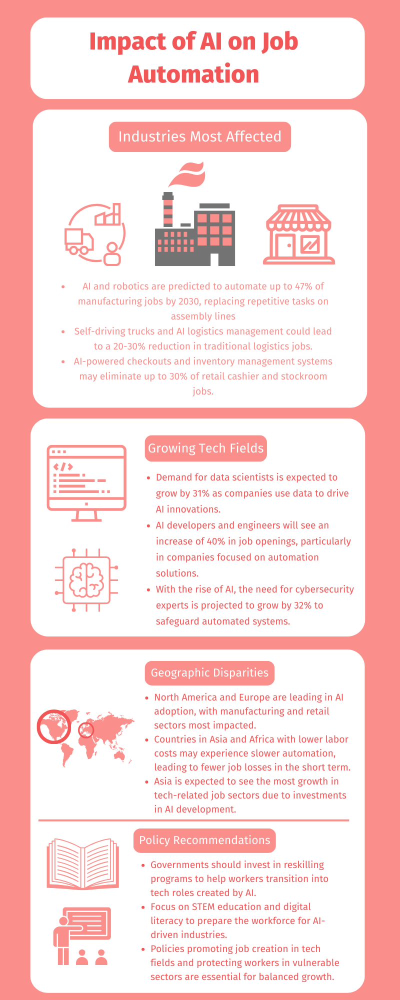

Infographic
This infographic illustrates the impact of AI on job automation, focusing on job losses and opportunities across different sectors.
This infographic illustrates the impact of AI on job automation, focusing on job losses and opportunities across different sectors.